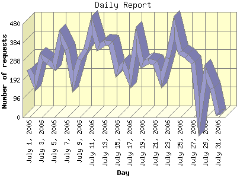

Report generated by Analog 6.0 and Report Magic 2.21
|
Web Server Statistics for "Harish Narayanan (hnarayan) - July 2006" Report generated by Analog 6.0 and Report Magic 2.21 |
The Daily Report identifies the activity for each day within the reporting period. Remember that one page hit can result in several server requests as the images for each page are loaded.

| Day | Number of requests | Number of bytes transferred | Percentage of the bytes | Percentage of the requests | |
|---|---|---|---|---|---|
| 1. | July 1, 2006 | 245 | 7.014 MB | 1.93% | 2.83% |
| 2. | July 2, 2006 | 173 | 5.312 MB | 1.46% | 2.00% |
| 3. | July 3, 2006 | 310 | 8.079 MB | 2.22% | 3.58% |
| 4. | July 4, 2006 | 285 | 10.680 MB | 2.93% | 3.29% |
| 5. | July 5, 2006 | 262 | 4.825 MB | 1.32% | 3.02% |
| 6. | July 6, 2006 | 413 | 70.765 MB | 19.43% | 4.76% |
| 7. | July 7, 2006 | 349 | 14.206 MB | 3.90% | 4.03% |
| 8. | July 8, 2006 | 181 | 9.748 MB | 2.68% | 2.09% |
| 9. | July 9, 2006 | 298 | 7.123 MB | 1.96% | 3.44% |
| 10. | July 10, 2006 | 350 | 9.403 MB | 2.58% | 4.04% |
| 11. | July 11, 2006 | 470 | 13.376 MB | 3.67% | 5.42% |
| 12. | July 12, 2006 | 358 | 15.836 MB | 4.35% | 4.13% |
| 13. | July 13, 2006 | 384 | 5.992 MB | 1.65% | 4.43% |
| 14. | July 14, 2006 | 381 | 14.173 MB | 3.89% | 4.40% |
| 15. | July 15, 2006 | 233 | 6.645 MB | 1.82% | 2.69% |
| 16. | July 16, 2006 | 273 | 12.609 MB | 3.46% | 3.15% |
| 17. | July 17, 2006 | 195 | 7.072 MB | 1.94% | 2.25% |
| 18. | July 18, 2006 | 401 | 15.419 MB | 4.23% | 4.63% |
| 19. | July 19, 2006 | 269 | 13.962 MB | 3.83% | 3.10% |
| 20. | July 20, 2006 | 290 | 19.302 MB | 5.30% | 3.35% |
| 21. | July 21, 2006 | 280 | 10.470 MB | 2.88% | 3.23% |
| 22. | July 22, 2006 | 192 | 10.524 MB | 2.89% | 2.21% |
| 23. | July 23, 2006 | 304 | 8.351 MB | 2.29% | 3.51% |
| 24. | July 24, 2006 | 461 | 17.228 MB | 4.73% | 5.32% |
| 25. | July 25, 2006 | 333 | 9.909 MB | 2.72% | 3.84% |
| 26. | July 26, 2006 | 312 | 10.109 MB | 2.77% | 3.60% |
| 27. | July 27, 2006 | 279 | 9.876 MB | 2.71% | 3.22% |
| 28. | July 28, 2006 | 0 | 0.000 B | 0.00% | 0.00% |
| 29. | July 29, 2006 | 224 | 7.909 MB | 2.17% | 2.58% |
| 30. | July 30, 2006 | 149 | 7.571 MB | 2.08% | 1.72% |
| 31. | July 31, 2006 | 13 | 750.885 KB | 0.20% | 0.15% |
Most active day July 11, 2006 : 313 pages sent. 470 requests handled. 14,026,217.00 served.
Daily average: 288 requests handled. 12.141 MB served.
This report was generated on September 9, 2006 16:01.
Report time frame July 1, 2006 00:30 to July 31, 2006 21:33.
| Web statistics report produced by: | |
 Analog 6.0 Analog 6.0 |  Report Magic 2.21 Report Magic 2.21 |